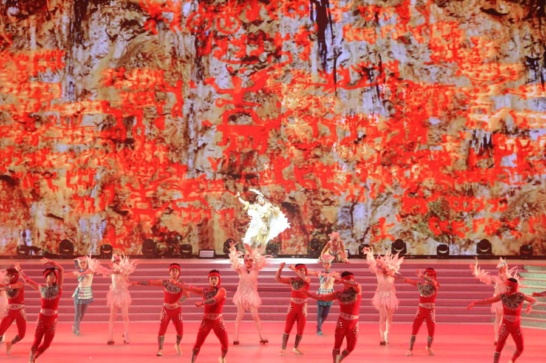

自治区成立60周年港澳系列宣传文化活动大幕开启
2018年07月04 来源：广西新闻网-广西日报

为庆祝改革开放40周年和自治区成立60周年，7月2日至20日，自治区党委宣传部、统战部会同广西日报社、广西人民广播电台、广西电视台、广西出版传媒集团、广西演艺集团、广西粤剧院、广西书画院等在香港、澳门开展系列宣传文化活动，向港澳社会各界和桂籍乡亲展示在习近平新时代中国特色社会主义思想指引下，新时代广西改革发展新风貌。7月2日、3日晚，系列活动首场——广西演艺集团的壮族魔幻杂技大剧《百鸟衣》在香港红磡体育馆精彩上演，让上万人次香港观众领略到美丽壮乡的民族风情，感受到广西发展的靓丽篇章和桂港一家亲的浓情厚意。
香港特别行政区民政事务局局长刘江华，香港广西社团总会会长蔡加赞，香港中联办社团联络部、九龙工作部、新界工作部以及自治区党委宣传部、统战部有关负责人现场共同敲响铜鼓，启动广西壮族自治区成立60周年系列宣传文化活动。
香港特别行政区民政事务局局长刘江华，香港广西社团总会会长蔡加赞，香港中联办社团联络部、九龙工作部、新界工作部以及自治区党委宣传部、统战部有关负责人现场共同敲响铜鼓，启动广西壮族自治区成立60周年系列宣传文化活动。
7月1日晚，应香港特别行政区政府的邀请，《百鸟衣》片段还参加了粤港澳庆祝香港回归21周年文艺演出。

壮族魔幻杂技大剧《百鸟衣》盛放香江